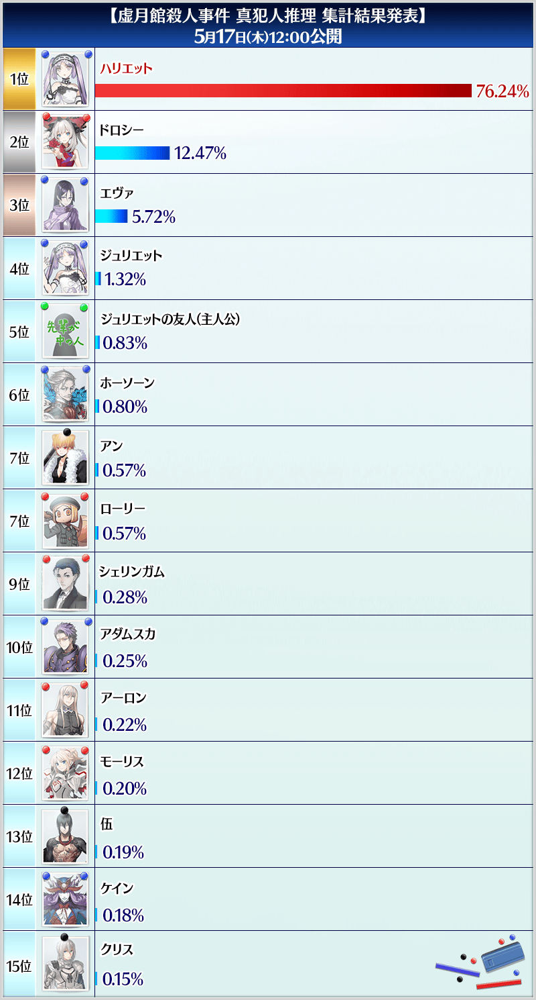
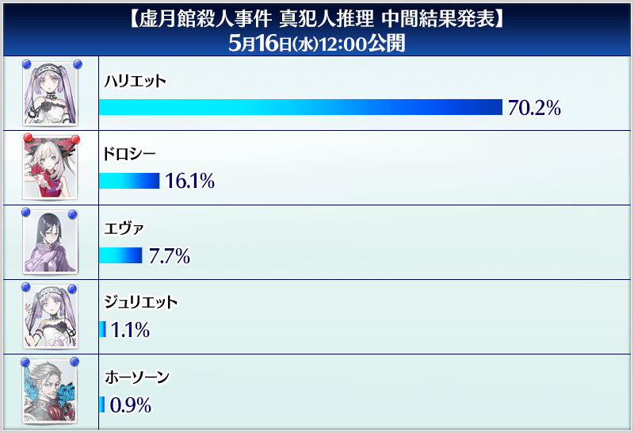

通過現在舉辦中的期間限定活動「虛月館殺人事件」主線關卡至「其8 不可使用未對讀者出示的線索解決」，投票給推理出的「虛月館殺人事件」真犯人吧！
依靠從各位的推理推測出真犯人的話，主線關卡的通過報酬會有所變化。
※可在遊戲內的主線關卡通過時獲得的報酬，即使未投票給推理出的真犯人，只要通過主線關卡「其10」也可獲得。
◆真犯人推理投票期間◆
2018年5月15日(二) 17:00～5月16日(三) 22:59
◆投票條件◆
請注意想投票給推理出的真犯人，必須通過期間限定活動「虛月館殺人事件」主線關卡至「其8 不可使用未對讀者出示的線索解決」才能進行。
◆關於主線關卡的通過報酬內容變化◆
主線關卡通過後贈送「黃金果實4個、白銀果實4個、1,000萬QP」！
另外，靠各位的推理最多投票數的嫌疑犯，與主線關卡的真犯人一致的話，做為追加報酬可獲得聖晶石10個！
【主線關卡通過報酬】
黃金果實4個、白銀果實4個、1,000萬QP
【真犯人一致情況的追加報酬】
聖晶石10個
◆真犯人推理投票方法◆
請自下述的按鍵，輸入各項目後點擊在下方顯示的傳送鍵。 【5月18日(五) 12:00追記】 拿到最多投票數的最有力嫌疑犯與期間限定活動「虛月館殺人事件」的真犯人一致！
【5月17日(四) 11:00追記】  【5月16日(三) 11:00追記】  ◆注意事項◆
發表期間限定活動「虛月館殺人事件」的真犯人！
在主線關卡的通過報酬追加聖晶石10個做為追加報酬！
【主線關卡通過報酬】
聖晶石10個、黃金果實4個、白銀果實4個、1,000萬QP
自5月15日(二) 17:00開始有關期間限定活動「虚月館殺人事件」的真犯人推理，發表了集計結果。
從各位收集而來投票的結果，拿到最多投票數的最有力嫌疑犯是「ハリエット(哈莉特)」！
推進剩餘的主線關卡至最後，用那雙眼睛確認真犯人吧！
※5月16日(三) 22:59為止的集計結果。
※得票率由於是小數後3位捨去刊載，合計值而非100%。
自5月15日(二) 17:00開始有關期間限定活動「虚月館殺人事件」的真犯人推理，發表了投票數的中間結果前5名。
還未投票的告位，也等著你們參考中間發表的結果投票給推理出的真犯人！
※5月16日(三) 9:00的集計結果。
・關於真犯人推理的投票1帳號限投1次。
・在真犯人推理投票時提供的個人情報，會利用在投票的分析，遵從本程式使用條約第8條（情報的取得及利用）管理。
・在真犯人推理的投票需要玩家ID。
依下列順序複製玩家ID後進行投票。
1.從在管理室(ターミナル)下方顯示的MENU，點擊「好友(フレンド)」
2.點擊好友畫面上方的「好友搜尋(フレンド検索)」
3.點擊在下方顯示的「複製(コピー)」
4.在玩家ID欄貼上
・在投票完成前關閉頁面的話，輸入內容會重置。敬請原諒。
・在投票內容輸入中結束期間的話，會無法傳送送信できません。敬請原諒。